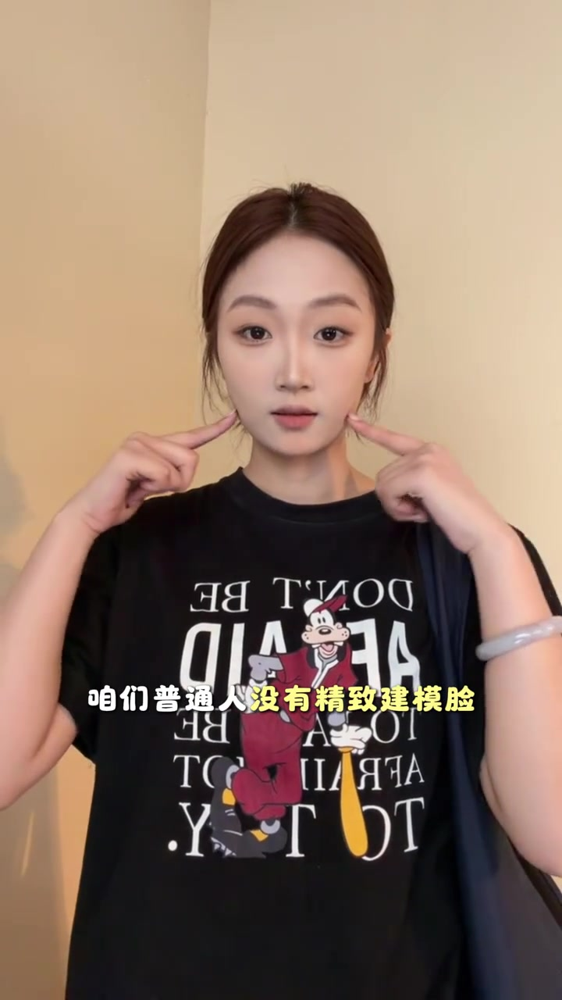
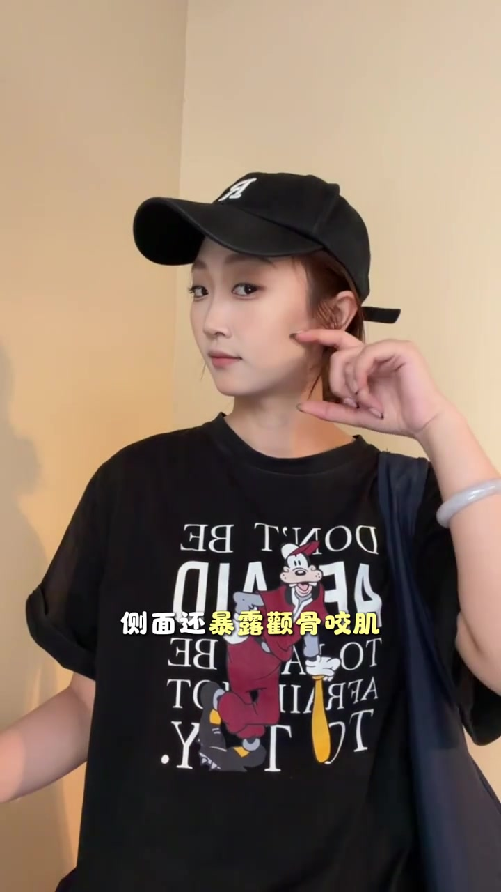
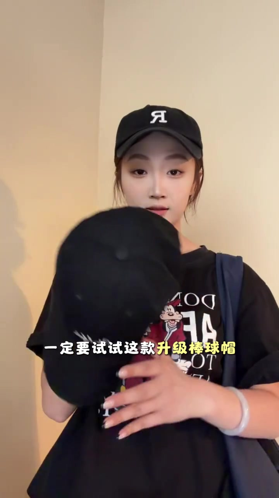
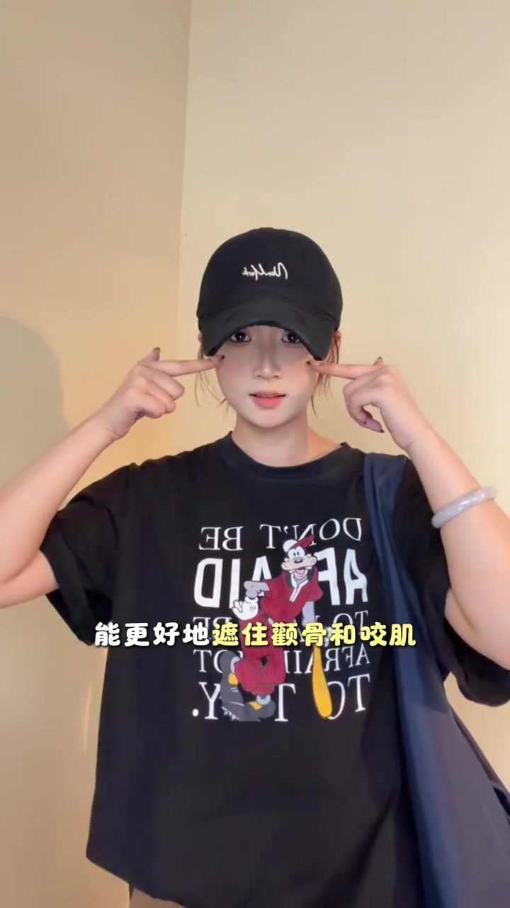
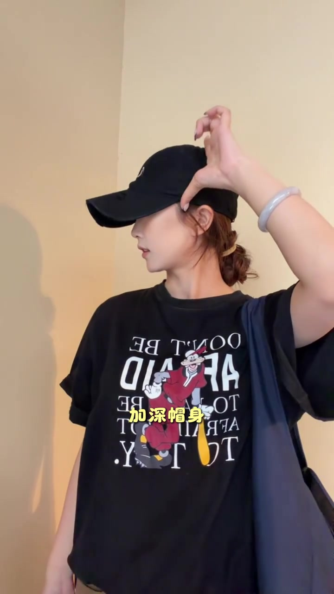

先抛问题：为什么明星戴棒球帽也显好看
开场不是直接推货，而是先问：为什么好多明星戴棒球帽，就算不露全脸，一眼也像美女。
画面先落到舞蹈室里的戴帽侧影，再切到更近的侧脸特写；字幕同步把“明星感”定成整条片子要追的效果。
对照：普通人没有“精致建模脸”，常规帽反而踩雷
镜头切到主讲人本人：她用双手点向下颌两侧，字幕写“咱们普通人没有精致建模脸”。接着她戴上普通棒球帽，指出常规款容易显脸大，侧面还会把颧骨和咬肌露出来。
可见字幕将普通脸型写成“精致建模脸”的反面；Whisper 把“建模”听成“见魔”、“颧骨咬肌”听成“全股药机”。下文叙述按画面字幕校正，文末转录区仍保留原始分段。


转入产品：一定要试试这款升级棒球帽
问题讲完后，主讲人双手举起一顶黑色棒球帽，字幕直接变成“一定要试试这款升级棒球帽”。戴上后，字幕又说“一上脸直接氛围感拉满”。
画面里的帽子是黑色鸭舌/棒球帽，帽前有白色绣字；她同时穿着黑色卡通印花 T 恤，整体是休闲试戴，而不是秀场走秀。

细节拆开：加宽帽檐、遮颧骨咬肌、加深帽身
她用手指点在帽檐边缘，字幕写“帽檐比常规款加宽不少”；随后双手指向脸颊两侧，说明更宽的檐可以更好地遮住颧骨和咬肌，并得出“显脸小”。
接着是帽身：字幕出现“加深帽身”，她侧过头调整后带，再点出贴合耳部、清晰侧脸线条。整段是按结构件推进，而不是只给最终效果图。
笔记文案补充（视频口播未展开）：更推荐藏青色与卡其色；帽子整体加大加宽加长；面向大头、方脸、胖脸、圆脸；主播自述头围约 56。


收尾：不是天生上镜脸，也能 get 头包脸效果
最后几秒把承诺收束到一句：就算不是天生上镜脸，也能轻松 get 明星同款“头包脸”效果。镜头回到正面站姿，帽子与宽松黑 T、肩上深蓝包带一起入画。
整条片子的推进很短：明星观感 → 普通脸型与常规帽问题 → 升级帽型的三项结构差异 → 头包脸效果。它更像试戴说服，而不是系统测款。